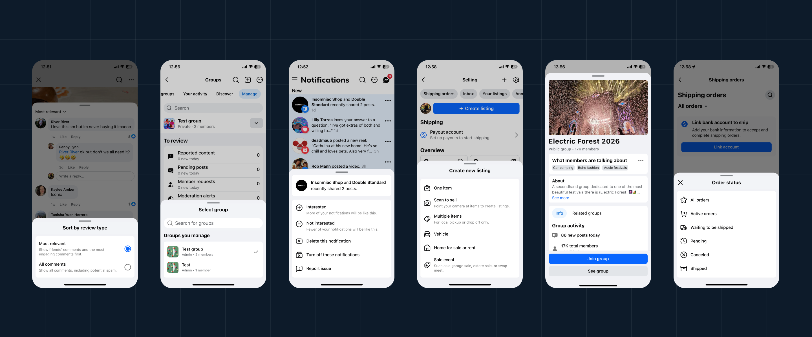
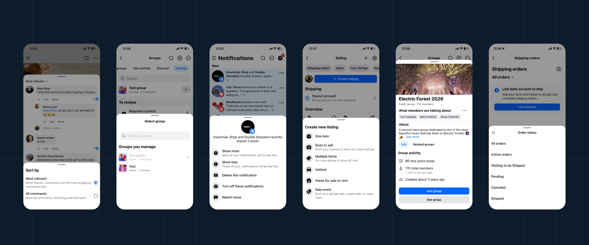
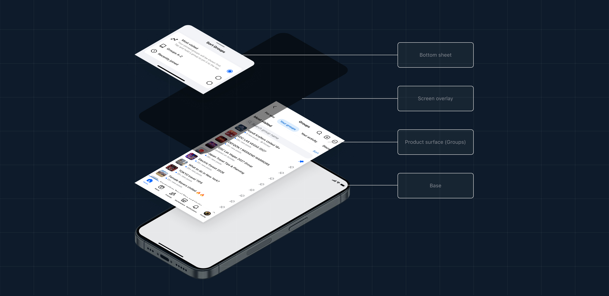
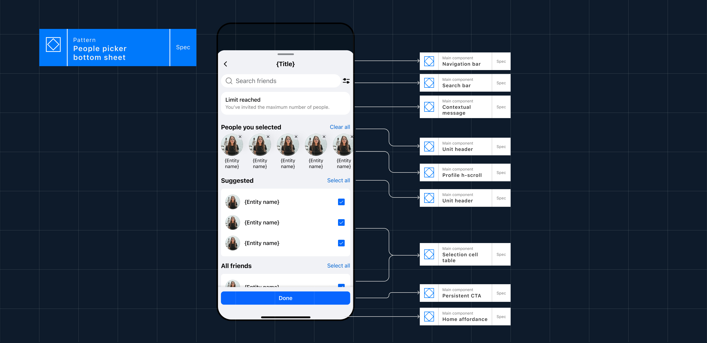
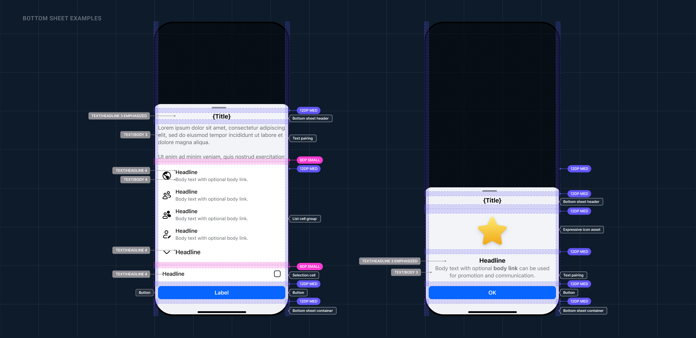

As Blueprint's dedicated patterns designer, I turned 50+ scattered bottom sheets into one system, then used it as the foundation for Meta's first AI-content transparency pattern, seen by billions.


191 teams build on the system across Meta. I became the dedicated owner of one pattern inside it, bottom sheets, partnering with navigation and motion to take it from ad hoc to standardized.
Bottom sheets were built independently across Feed, Reels, Messaging, and Marketplace, no shared reference, no record of past decisions. Before I could propose what should change, I had to audit what already existed.
I partnered with the navigation team to make bottom sheets a real container strategy, defining when a sheet is the right tool versus a contextual menu, and making that call consistent app-wide instead of ad hoc per surface.



I wanted to bring rigor where there had been none, trading gut instinct for real research. Watching that discipline carry into AI transparency, somewhere I never expected to work, was proof the standard held under pressure I couldn't have predicted.
Enter the password to read the extended version. Don't have one? Request access.